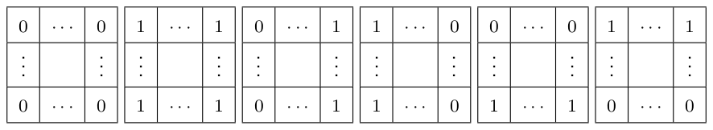

D Bánh Bò
Let \(g_{i,j} \in \{0, 1\}\) be the value at row \(i\) and column \(j\). We use zero-indexing (\(0 \le i \lt r\) and \(0 \le j \lt c\)). Also, for simplicity sake, let \(r_0 = 6\) and \(c_0 = 7\).
Observation D.1 (“Quadrangle Equation”). For \(r_0 \le i \lt r\) and \(c_0 \le j \lt c\), \(g_{i,j} + g_{i-r_0,j-c_0} = g_{i-r_0,j} + g_{i,j-c_0}\).
Proof. Consider a \((r_0 + 1) \times (c_0 + 1)\) grid. Its four \(r_0 \times c_0\) subgrids overlap. Adding the top-left and the bottom-right subgrids and subtracting the bottom-left and the top-right subgrids will yield the equation. □
Observation D.1 has several nice consequences. For instance, in any \((r_0 + 1) \times (c_0 + 1)\) subgrid you can check that the only possibilities for the four corners are:

Since these six “tiles” can only be assembled in limited ways, we eventually observe that:
Observation D.2. In the lattice \(\{(i + r_0 a, j + c_0 b) \mid 0 \le a \lt r/r_0, 0 \le b \lt c/c_0\}\) for each \((i, j) \in \{0, \ldots, r_0 - 1\} \times \{0, \ldots, c_0 - 1\}\), at least one of the following holds: (1) for each row, all cells in it contain the same bit, or (2) for each column, all cells in it contain the same bit. (Both can be true.)
Observation D.1 also tells us that after we choose the topmost \(r_0\) rows and leftmost \(c_0\) columns, all the other cells are completely determined. Thus, all that remains is to choose the cells in those rows and columns while satisfying the following necessary conditions, which can also be shown to be sufficient by induction:
- For each \((i, j)\) such that \(0 \le i \lt r_0\) and \(0 \le j \lt c_0\), one (or both) of the following hold: (A) \(g_{i,j} = g_{i+r_0,j} = g_{i+2r_0,j} = g_{i+3r_0,j} = \ldots\) and/or (B) \(g_{i,j} = g_{i,j+c_0} = g_{i,j+2c_0} = g_{i,j+3c_0} = \ldots\),
- \(g_{i,0} + g_{i,1} + \ldots + g_{i,c_0-1} = g_{i+r_0 a,0} + g_{i+r_0 a,1} + \ldots + g_{i+r_0 a,c_0-1}\) for \(0 \le i \lt r_0\) and \(0 \le a \lt r/r_0\), and
- \(g_{0,j} + g_{1,j} + \ldots + g_{r_0-1,j} = g_{0,j+c_0 b} + g_{1,j+c_0 b} + \ldots + g_{r_0-1,j+c_0 b}\) for \(0 \le j \lt c_0\) and \(0 \le b \lt c/c_0\).
For further clarity, let’s define a pair \((i, j)\) as being constant if the values of \(g_{i+r_0 a,j+c_0 b}\) remain consistent for all \(a\) and \(b\). If condition (A) is satisfied for \((i, j)\), we denote the pair as being horizontally striped. Likewise, if condition (B) is met for \((i, j)\), we denote the pair as being vertically striped. Note that these conditions for \((i, j)\)–being constant, being horizontally striped, and being vertically striped–are not mutually exclusive. For example, being horizontally striped can include the case of being constant.
For the top-left \(r_0 \times c_0\) cells, let’s assume that each cell is fixed as one of constant, horizontally striped, or vertically striped. We will now determine the number of possible value assignments for the topmost \(r_0\) rows and the leftmost \(c_0\) columns. For simplicity, let \(p = r/r_0 - 1\) and \(q = c/c_0 - 1\). Let’s fix the values of \(g_{i,j}\) to \(x_{i,j} \in \{0, 1\}\) for \(0 \le i \lt r_0\) and \(0 \le j \lt c_0\). Let \(H\) denote the set of horizontally striped cells and \(V\) denote the set of vertically striped cells.
- The number of ways to fill the remaining cells in the leftmost \(c_0\) columns is \(\prod_{i=0}^{r_0-1} \binom{m_i}{n_i}^p\), where \(m_i = \#\{j \mid (i, j) \in H\}\) and \(n_i = \#\{j \mid (i, j) \in H, x_{i,j} = 1\}\).
- The number of ways to fill the remaining cells in the topmost \(r_0\) rows is \(\prod_{j=0}^{c_0-1} \binom{m'_j}{n'_j}^q\), where \(m'_j = \#\{i \mid (i, j) \in V\}\) and \(n'_j = \#\{i \mid (i, j) \in V, x_{i,j} = 1\}\).
By summing over all possible combinations of values for \(x_{i,j}\), the number of ways to fill the topmost \(r_0\) rows and the leftmost \(c_0\) columns is
\[2^{r_0 c_0 - |H| - |V|} \cdot \left( \prod_{i=0}^{r_0-1} \sum_{k=0}^{m_i} \binom{m_i}{k}^{p+1} \right) \cdot \left( \prod_{j=0}^{c_0-1} \sum_{k'=0}^{m'_i} \binom{m'_i}{k'}^{q+1} \right).\]Furthermore, if \((i, j)\) is vertically striped and it is not constant, we refer to the pair as strictly vertically striped.
When we fix that each of the top-left \(r_0 \times c_0\) cells is either strictly vertically striped or horizontally striped, the number of ways to fill the cells can be represented as \(\prod_{i=0}^{r_0-1} f(m_i) \prod_{j=0}^{c_0-1} f'(m'_j)\) for some functions \(f\) and \(f'\), which can be obtained through a calculation of inclusion and exclusion. Here, with \(H\) denoting a set of horizontally striped cells, we define \(m_i = \#\{j \mid (i, j) \in H\}\) and \(m'_j = \#\{i \mid (i, j) \in H\}\). Note that the two conditions, "strictly vertically striped" and "horizontally striped," are mutually exclusive and collectively exhaustive.
From this observation, you can compute the solution of this problem in several ways. One is dynamic programming: There are \(2^{r_0 c_0}\) ways to fix "strictly vertically striped" or "horizontally striped" for each cell. Performing a brute-force search is too slow, but you can implement DP computation with some pruning tricks to improve efficiency.
Another approach is using generating functions: suppose that column \(j\) corresponds to a variable \(z_j\) and that having \(m'_j\) horizontally striped cells in column \(j\) corresponds to \(z_j^{m'_j}\). A polynomial for one row is represented as
\[G = \sum_{x_0, x_1, \ldots, x_{c_0-1} \in \{0,1\}} f(c_0 - x_0 - x_1 - \ldots x_{c_0-1}) z_0^{x_0} \ldots z_{c_0-1}^{x_{c_0-1}}.\]Computing \(G^{r_0}\) using Fast Fourier Transform (FFT) can lead to computing the solution efficiently. The runtime is \(O(N \log N)\), where \(N = (r_0 + 1)^{c_0}\).
(Acknowledgement: This analysis is partially based on insightful feedback from Yui Hosaka.)